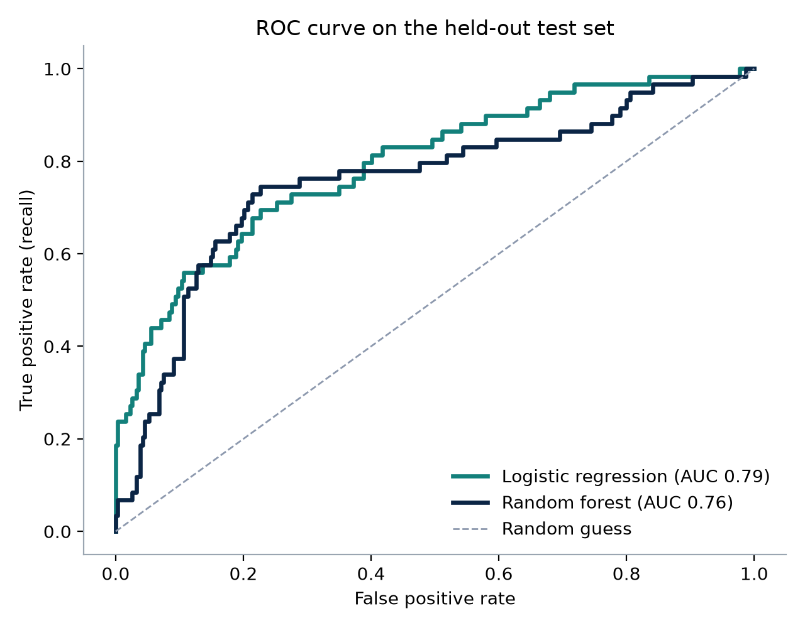
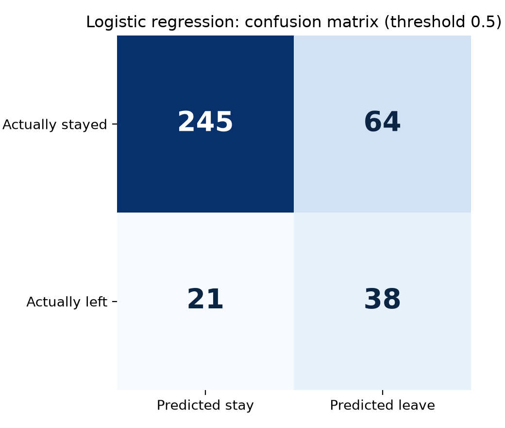
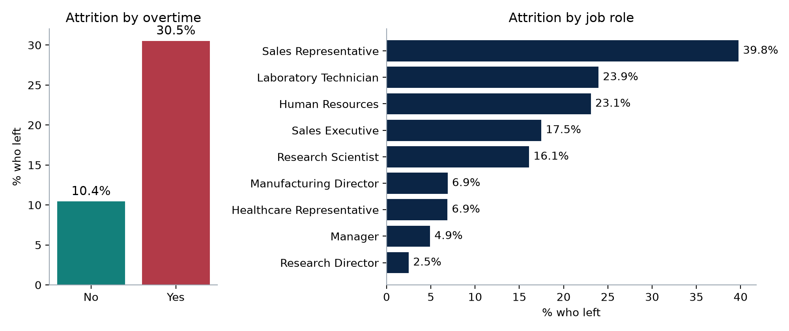
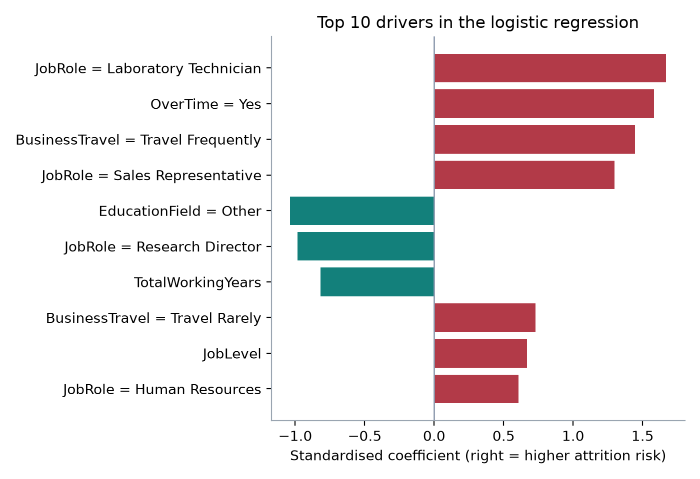

Business question
Replacing an employee costs recruitment, onboarding and lost productivity. HR teams want to know which parts of the workforce are most at risk so they can act before people resign. This project tests how well standard HR data predicts attrition and which factors matter most.
The dataset is a fictional sample created by IBM data scientists and published for learning. It is not from a real organisation, and the results show the method rather than facts about any employer.
Data and preparation
1,470 employees and 35 columns covering role, department, level, pay, tenure, overtime, travel, satisfaction and performance ratings. 237 employees (16.1%) left.
- Removed as uninformative
EmployeeCount,Over18andStandardHourshave one value for everyone.EmployeeNumberis an ID. - Excluded on purposeAge, gender and marital status are protected characteristics. They were left out so the model cannot base risk on them.
- EncodingNumbers were standardised so coefficients can be compared. Categories such as job role were one-hot encoded, with one level held as the baseline.
- Train and test split75% for training, 25% (368 employees, 59 leavers) held back for testing, keeping the same leaver share in both.
The model explained
Pipeline
prep = ColumnTransformer([
("num", StandardScaler(), numeric),
("cat", OneHotEncoder(handle_unknown="ignore", drop="first"), categorical),
])
model = Pipeline([("prep", prep),
("clf", LogisticRegression(max_iter=2000, class_weight="balanced"))])Preparation and model sit in one pipeline, so scaling is learned from training data only and applied unchanged to the test set. class_weight="balanced" gives leavers more weight, because only one in six employees left and an unweighted model would learn to predict "stays" for almost everyone.
Validation
cv = StratifiedKFold(n_splits=5, shuffle=True, random_state=42)
cross_val_score(model, X_train, y_train, cv=cv, scoring="roc_auc")Five-fold cross-validation on the training data checks that performance is stable, before a single final check on the held-back test set.
A random forest was trained the same way for comparison. It captures interactions between factors but is harder to explain.
How well it works
| Model | CV ROC AUC | Test ROC AUC | Precision | Recall | F1 |
|---|---|---|---|---|---|
| Logistic regression | 0.834 ± 0.042 | 0.794 | 0.373 | 0.644 | 0.472 |
| Random forest | 0.799 ± 0.045 | 0.758 | 0.456 | 0.525 | 0.488 |
- ROC AUCThe chance the model ranks a random leaver above a random stayer. 0.5 is guessing, 1.0 is perfect.
- RecallShare of actual leavers the model flags. 64% means 38 of 59.
- PrecisionShare of flagged employees who actually left. 37% means most flags are false alarms.


The logistic regression was chosen. It ranks employees better on unseen data and each coefficient can be explained to HR and managers. The threshold can be moved: a higher threshold means fewer false alarms but more missed leavers.
What drives attrition

Employees working regular overtime left at 30.5%, three times the rate of those who did not.
| Group | Attrition | Compared with | Attrition |
|---|---|---|---|
| Overtime | 30.5% | No overtime | 10.4% |
| Travels frequently | 24.9% | No travel | 8.0% |
| 0 to 1 year at the company | 34.9% | 11+ years | 8.1% |
| Job level 1 | 26.3% | Job level 4 | 4.7% |
| Sales representative | 39.8% | Research director | 2.5% |

- Overtime and frequent travel raise risk even after role, pay and tenure are taken into account. Both are working conditions the organisation can change.
- Job role coefficients are measured against healthcare representatives, the baseline role.
- Leavers had a median monthly income of 3,202 against 5,204 for stayers (units as supplied in the dataset). Pay overlaps with job level and experience, so the model spreads the effect across these, and single coefficients such as job level should not be read alone.
Limitations and responsible use
- Fictional dataResults describe a sample dataset. A real organisation would need to rebuild and test the model on its own records.
- Association, not causeThe model finds patterns linked to leaving. It does not prove that reducing overtime will keep a particular person.
- False alarmsMost flagged employees stay. Treating a flag as a fact could damage trust or lead to unfair decisions.
- Fairness checksProtected characteristics were excluded, but other fields can act as proxies. Results should be checked for different outcomes by group before use.
- PrivacyEmployees should be told how their data is used, and a data protection impact assessment should be completed under UK GDPR.
- DriftPatterns change with the labour market and the organisation. The model needs retesting at least every six months.
Recommendations
- Review overtime patterns first. It is the strongest controllable driver. Report overtime by team monthly and set a threshold for review.
- Strengthen the first year. A third of employees with a year or less of service left. Structured onboarding and check-ins at 30, 90 and 180 days target the highest-risk period.
- Look at entry-level roles in sales and the laboratory, including pay against the market and progression routes.
- Use risk scores at group level in workforce planning and retention budgets, not as individual labels in performance or promotion decisions.
- Pilot on real data with governance: HR, legal and data protection sign-off, fairness testing and a regular review of accuracy.
How to reproduce it
- The IBM HR Analytics Employee Attrition & Performance dataset is in
attrition-risk-model/data/. - Run
python python/attrition_model.py. It trains both models with a fixed random seed and writesoutputs/metrics.jsonand the four charts.